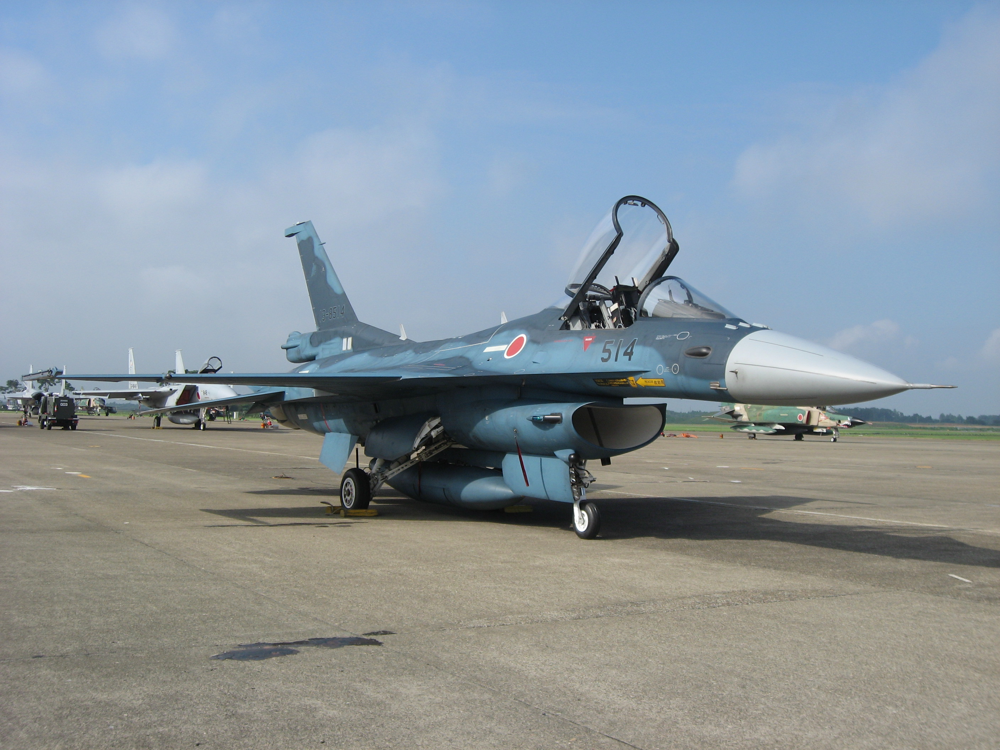
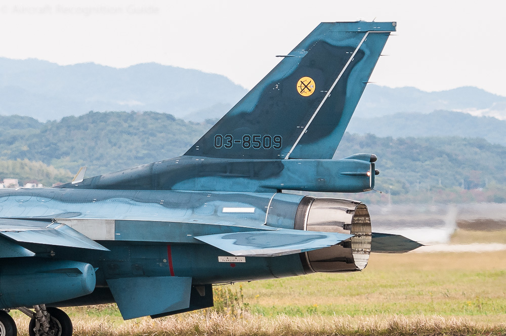
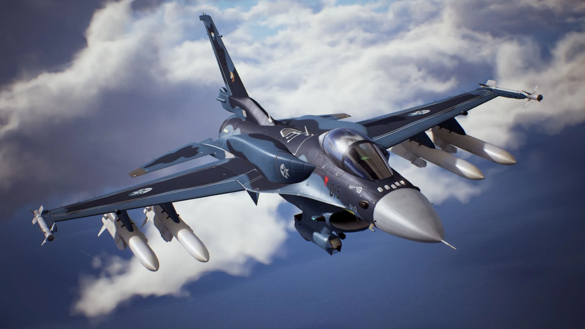

Mitsubishi F-2
| F-2 | |
| Descrição | |
|---|---|
| Função: | Multi-Função |
| Local de Origem: | Japão/Estados Unidos |
| Fabricante: | Mitsubishi Heavy Industries /
Lockheed Martin |
| Primeiro Voo: | 7 de Outubro de 1995 |
| Introduzido em: | 2000 |
| Status: | Em Serviço |
| Utilziadores: | Japão |
| Produzido: | 1995 a 2011 |
| Caractersiticas Gerais | |
| Tripulação: |
|
| Comprimento: | 15.52m |
| Altura: | Não Disponivel ao Publico |
| Envergadura das Asas: | 11.125 |
| Area das Asas: | 34.84m² |
| Peso Vazio: |
|
| Peso Bruto: | 13.459kg |
| Peso Máximo de Decolagem: | 22.100kg |
| Capacidade de Combustivel: |
|
| Performace | |
| Motores: | 1 xGeneral Eletric F110-IHI-129 turbofan |
| Empuxo: |
|
| Velocidade Máxima: | March 2.0 ou 2.124km/h |
| Alcance: | Não Disponivel ao Publico |
| Alcance de Combate: | 833km |
| Armamento | |
| Armas: | 1 x Canhão de 20mm JM61A1 |
| Hardpoint | Não Disponivel |
| Foguetes |
|
| Misseis |
Ar-Ar:
Ar-Terra:
|
| Bombas |
|



Curiosidades

Aparição dele em "Ace Combat 7"